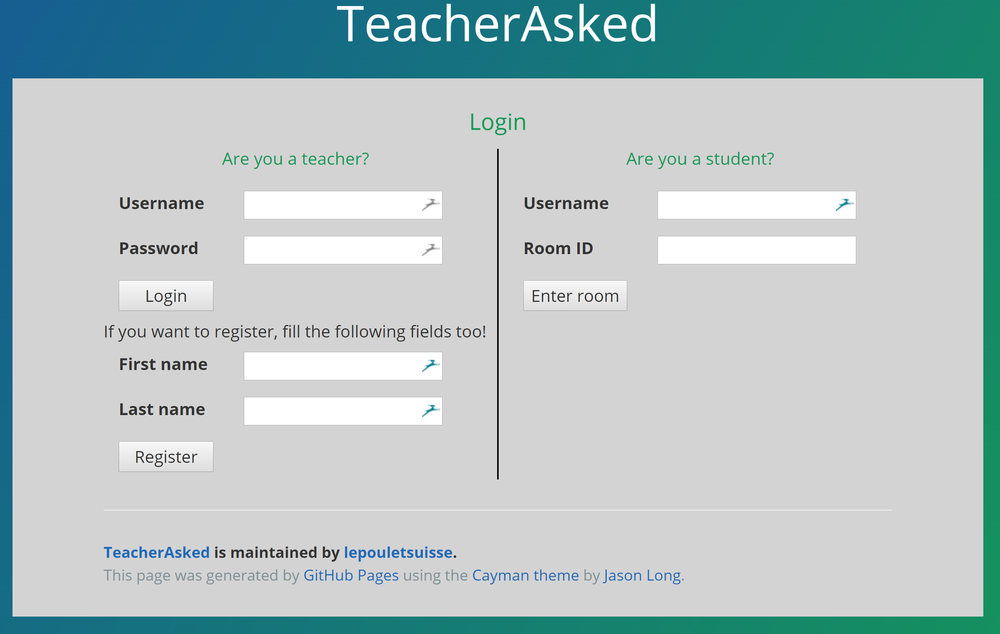

You are a teacher
Getting started

Login page
- Go on the application by clicking on the "Go to the app" button or by following this link.
- Log in with your credentials or register by filling the 4 fields.
- Once you are on your account page, you can either create a new room or see your old questions by clicking on them.
- Once you are in a new room, you can see the students that are connected and ask a new question. You can also specify if you want the application to auto-check the student's answers. Once a question is asked, you have the possibility to see the result in real time on your page or not.
- Once everybody has answer the question, you can close the question and a lot of statistics will be display to you and your students. At this point, you can either close the room or begin a new question in the same room.
Teacher profile page
Teacher ask a new question
Teacher asked a question
Statistics when question is closed
Statistics when question is closed